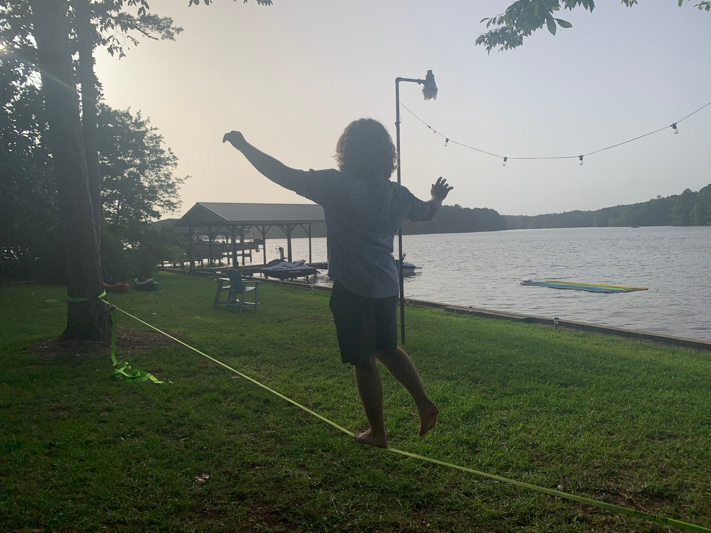

About Me

Hello! I'm Ryley Cole, a passionate artist and outdoor enthusiast. I spent the first 18 years of my life in Acworth, GA, before moving to Milledgeville full-time. My love for nature thrives through activities such as kayaking, paddleboarding, and fishing. When indoors, I channel my creativity into cooking, various art forms, and gaming.
I have a background in both technology and art, and I enjoy merging these fields to create unique and interactive experiences. This website is a testament to my journey and passions, offering a glimpse into my world through my artistic creations.
Feel free to connect with me on social media or view my resume for more details on my professional background and projects.